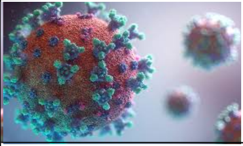
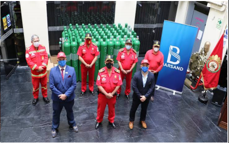

Centro de Control de Infectados
| INICIO | CASOS DIARIOS | CASOS DE COVID19 EN PERÚ | ¿CÓMO PODEMOS PREVENIR EL CORONAVIRUS? | ¿CÓMO CONTACTARNOS? | TWITTER DEL MINSA |

CORONAVIRUS: SARS-COV 2El coronavirus SARS-COV2 es un nuevo tipo de coronavirus que puede afectar a las personas y que se detectó por primera vez en diciembre de 2019 en la ciudad de Wuhan,provincia de Hubei,en China. Mayoritariamente, en un 80% de los casos solo produce síntomas leves respiratorios. |
 ¿Cómo Ayudar?Mediante este enlace podrás acceder a una plataforma para ponerte en contacto con alguna persona que tenga algún familiar en estado crítico y de poderse ayudarás con tu tanque de oxigeno |
¿Quienes Somos?Somos un Centro de Control de Infectados CCI es una empresa que se encarga de registrar y monitorear a aquellas personas que dan positivo a la enfermedad viral SARS-COV2, toma registro de su DNI y Número de celular para en caso ser asintomática esta persona no incumpla su cuarentena y no exponga a más contagios, haciendo uso de el GPS de su dispositivo móvil la seguiremos y en caso salga de su zona residencial mande una alerta para que algún guardia o autoridad la retenga, también es una empresa recibidora de donaciones, para así ayudar a las familias de escasos recursos asistiendo con tanques de oxigeno donados, o comprados por la misma empresa. |